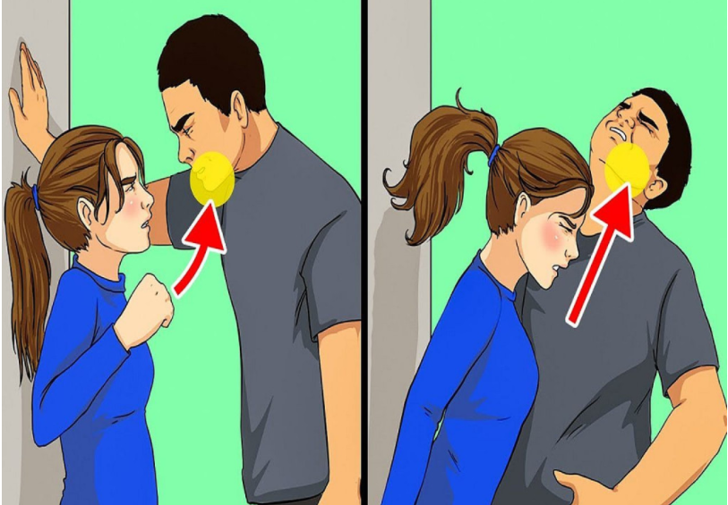

NEW
LIGHT
NEW
LIGHT
Every day, either on social media or on Television, you are hearing about women being victimized. There are so many stories of women that are available and you can hear about sexual violence or a random attack by strangers as well as being abused in some way. The world is changing and becoming more unpredictable particularly for women. As such, self-defence training is one of the most needed and must for every woman’s to-do list. In the crime world, self-defence training is suggested, so that the women can resist any kind of sexual assault as well as random attacks. Here are the reasons why self-defence is so important for women.
Reasons for joining the self-defence Training Program
Still, now, women are not able to get equal rights in society. They are restricted to do their responsibilities. People should come out from these restrictions and limitations and motivate them by presenting gifts for women. The women are failed to protect themselves when they are facing any kind of sexual violence and random attack. The main reason for the failure is fear. The below mentioned are the reasons for joining the self-defence training program and usage of self-defence weapons.
